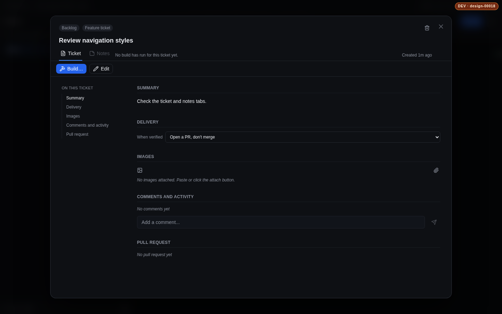
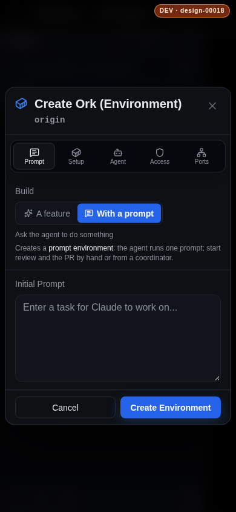
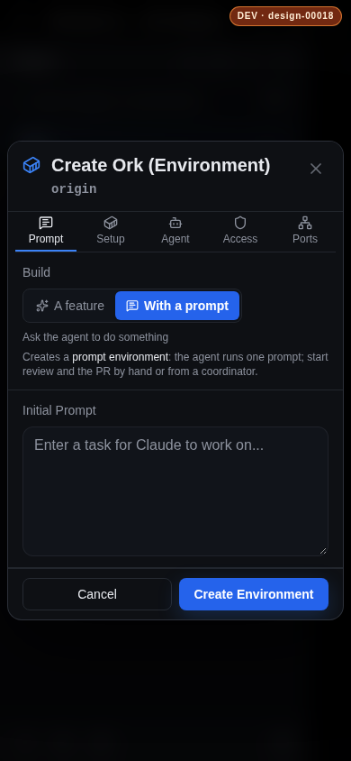

Design tasks / 00018
00018 · Reduce tab-like controls to the documented styles
Problem
ui/tabs.tsx rendered a bg-muted track with a
bg-background active tab, which matches none of the three documented patterns.
KanbanTaskDialog.tsx hand-rolled an underline tab, and
CreateEnvironmentDialog.tsx styled its mobile tabs with a
border-primary/40 outlined active tab and 10px labels.
Find every instance
grep -rln --include=*.tsx "TabsList\|TabsTrigger" apps/web/src | grep -v "\.test\."Scope
| Where | What |
|---|---|
apps/web/src/components/ui/tabs.tsx |
the shared Tabs |
apps/web/src/components/ui/segmented-selector.tsx |
the documented segmented control |
apps/web/src/components/kanban/KanbanTaskDialog.tsx |
hand-rolled underline tabs |
apps/web/src/components/environments/CreateEnvironmentDialog.tsx
|
mobile tab triggers with an outlined active tab |
Approach
-
List every use of
Tabsin Notes and note which documented pattern each should be (underline, pill or segmented). -
Give
ui/tabs.tsxvariants for the documented patterns and migrate callers; retire the grey track if nothing needs it. - Move the hand-rolled tabs onto the shared variant.
Decisions
One option is marked recommended. Record the option you chose in Notes.
Shape of the change
Required evidence: before and after
Every slot needs a before image (captured first, before editing any code) and an
after image. Use the same profile, fixture data, theme, viewport and zoom for both.
Save PNGs under design/images/00018/ using the exact file names shown. See
How to capture.
Kanban task dialog tabs desktop 1440×900
Open the fixture ticket “Review navigation styles” on the Kanban board.

Create environment dialog mobile tabs narrow 390×844
Open the fixture project’s Create environment dialog at a narrow width.


Out of scope
- Workspace tab row and top section tabs, which already follow the spec.
Verification
mise run test:logged -- --name web-typecheck -- bun run --cwd apps/web typecheck
NODE_ENV=test mise run test:logged -- --name tabs -- bun --cwd=apps/web test src/components/ui --parallel=2 --only-failures
mise run format:check
mise run lint
React tests in this repo need NODE_ENV=test in build shells. Real-browser
check: use a throwaway dev:test profile named design-00018, never
a production instance.
Acceptance checklist
-
Before images captured on unmodified code for every slot above, and committed
under
design/images/00018/. - After images captured after the change, with the same profile, data, theme, viewport and file names, and committed beside the before images.
- Every image slot on this page shows a picture (the evidence badge reads “6 / 6”).
- I have looked at each pair and written what changed, and anything that did not change that should have, in Notes.
- Hits were classified in Notes, and each decision above is recorded with the option chosen.
-
Type-check and the owning tests pass (commands above);
mise run format:checkandmise run lintpass. - The browser check includes a page reload and, for layout-affecting changes, the narrow viewport.
- DESIGN.md or PRODUCT.md updated if needed: Name the final tab variants in Components → Navigation.
- Status set to Done on this page and in the index.
Notes
Tab list inventory
-
Underline.
KanbanTaskDialog(Ticket and Notes),CreateEnvironmentDialog(mobile configuration views), andFeaturesView(Chat, Stories and open stories). -
Pill.
FilesPanelHeader(file and pull request views),EnvironmentSettingsDialog(agent extensions), andSkillsSettings(agent and category selection). -
Segmented.
AddProjectDialog(project source),DesignWorkspaceDialog(New, Open and Saved),SkillsSettings(Rendered and Raw),RenderedRawFileShell(Rendered and Raw),PipelineFlowView(Transcript and Tests),GraphRunInspector(Details and Transcript), andMultiReviewInspectorViews(Transcript and Report). KanbanBoarduses the shared root and panels and supplies no tab list.
Decision
Chose explicit variants on the shared tab list and migrated each caller by purpose. Each list and its triggers now share one style choice. The segmented tabs and the standalone selector use the same track token classes. This keeps the existing tabs’ keyboard behaviour and panel wiring. Palette values are unchanged.
Image pairs
Captured in Chromium from the headless design-00018 profile using the same dark
theme, fixture, viewport and 1× scale for each pair. Baseline commit
b2c91abb9 had no source changes.
- Kanban task dialog. The selected Ticket tab keeps its blue underline using the shared style. Notes is disabled in this fixture because the ticket has no build.
- Create environment. A blue underline replaces the selected tab’s outlined tile, and the icons sit above 12px labels in 44px-tall targets.
- Add project. Existing repository and Create new share one bordered track. The selected source has a solid blue fill and bold label.